CREDIT Knowledge Centre for global operations, covering Google ranking, Google opening and Google ads. Each guide answers an independent question and helps you move from search needs to implementable solutions.
The independent foreign trade station Google Ads has been operating online: it has identified the duties of GA4, GTM and advertising accounts, tested the submission of questionnaires, checked for duplicate conversions, attached a list of receiving and inspection lines and a method of continuous double-checking.
Read full text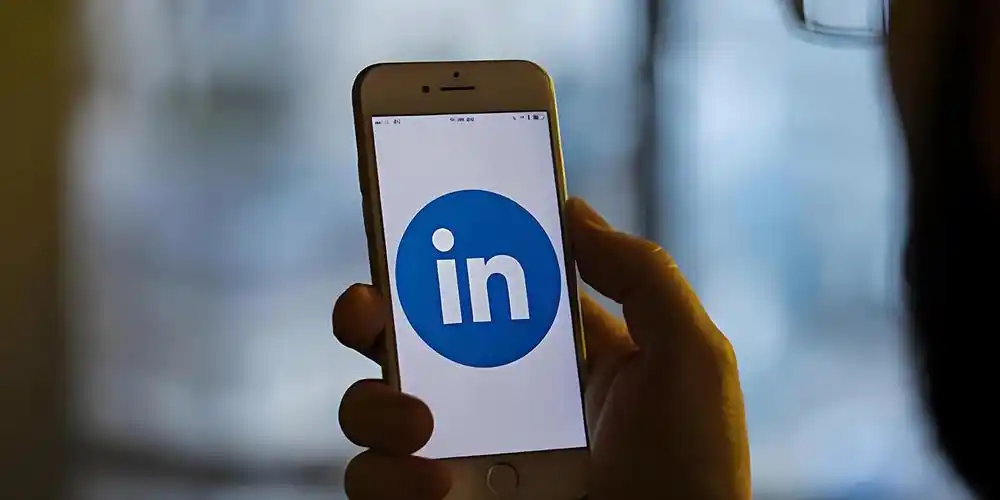
Information 2026-11-06Foreign-trade enterprises that use manure for photovoltaics, car parts or detection equipment often hear the saying: "The customer is on LinkedIn, and has to do it. "and then began to look for a substitute, to get a few offers, which looked the same, but the price was still short. Most of the problem is that the word "supra" is too general. Some are responsible for postings, others are re-organizing the company's home page, others are looking for clients on their own initiative, and the workload, skills and manner of receiving and inspection of three matters are completely different. That's why we're going first.
Read full textA foreign trade enterprise that uses spare parts or sets of equipment to find service providers to operate the overseas social media account found that, after having received several proposals, the offer gap was not small, but that the programme contained the words “a platform-wide coverage and a steady increase in fans”. What really needs to be recognized is: do service providers know about the target market and the procurement population? Can professional content continue to be produced? Is account operation and data reporting transparent? For B2B foreign trade companies, the value of Anhui overseas media operations is not just more than more than a fan.
Read full text GEO · 2026-11-06
GEO · 2026-11-06This is often the case with service providers: a SEO newspaper, a GEO newspaper, and a single offer that is spread like the same job - a technical examination, an update of content, an external chain, a monthly report. So the question is, where exactly is the difference between GoogleSEO and GEO? Actually, GEO's not a different set of stoves. It means that AI is willing to refer to your brand and quote your page in answer to questions. It expands the search-optimistic scene to a level: from "Cover."
Read full text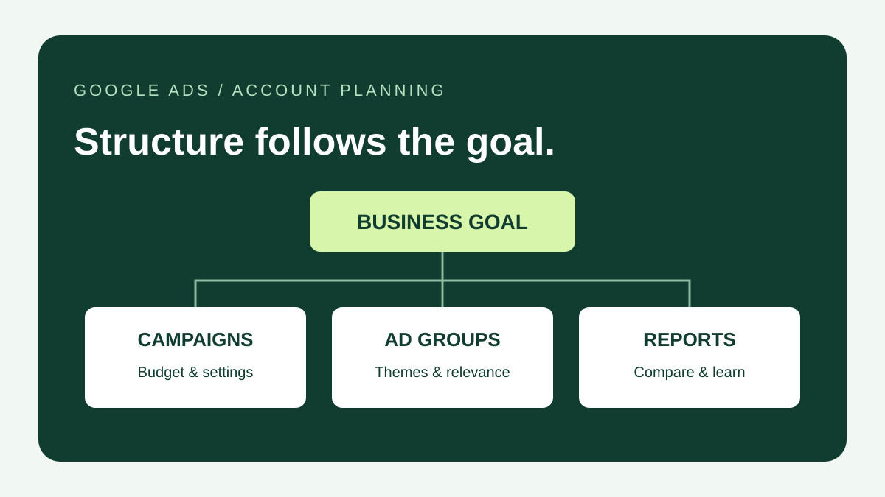
Google advertising account structure 2026-11-09The Google Ads ad series is not as good as it is. When to break down the series and when to break it into advertising groups, using budget boundaries, operational objectives and page themes, with examples of B2B planning, adjustment lists and 2026 language mechanism reminders.
Read full text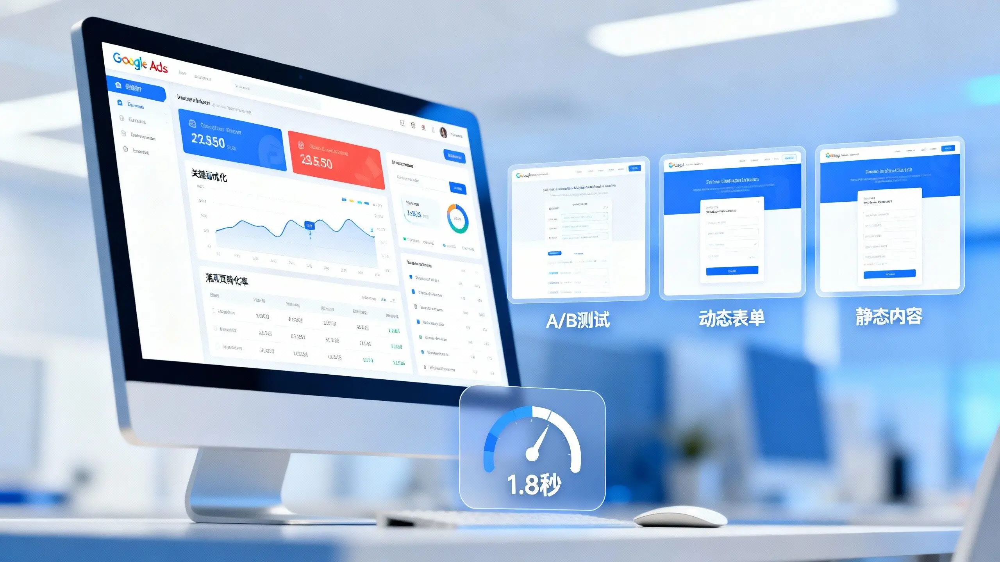
Ads · 2026-11-05After clicking on Google ads on the website, overseas buyers usually also judge whether suppliers meet procurement requirements: whether products and specifications are matched, whether the enterprise meets delivery requirements, whether it has any relevant experience, and how to contact the request for quotations. So the role of the Google Advertisement for Foreign Trade is to take on the visits that the ads bring, to help buyers quickly find the information needed to make decisions and to complete the next contact. So how do we design the Google ad page for foreign trade?
Read full text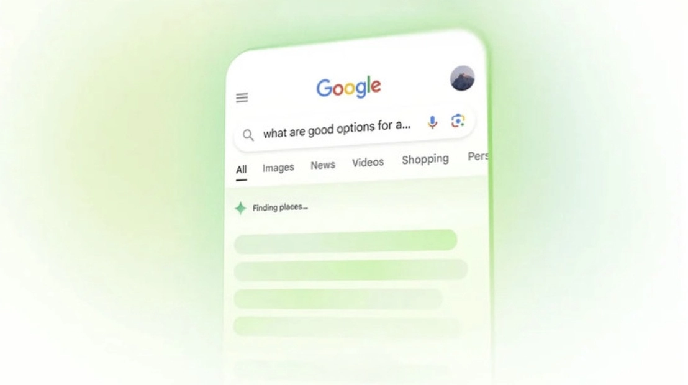
GEO · 2026-11-05Once in a while, the fact that the brand is in the AI response does not mean that the brand has been exposed. In a few days, a different problem or region will be searched and the result may be different. Google AI Overview generates summaries based on user queries and displays links to relevant sources. Unlike traditional search results, the presentation is influenced by search problems, regional, language and system changes. Therefore, check Goog
Read full textTwo weeks after the SEO service was launched, the question began to be “Why isn't it on the front page”, a situation that many companies would have encountered when they were doing GoogleSO. GoogleSEO, unlike the ads, can get a hit when it's on. The search engine needs to find pages, capture content, create an index, and then rank according to relevance and competition. As a result, GoogleSEO had no unified answer for the time of effectiveness and was usually subject to web-based, keyword competition and continuous implementation
Read full text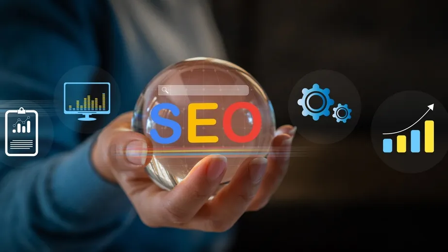
SEO · 2026-11-04For foreign trade enterprises, Google SEO is a long-term effort that involves key word studies, website optimization, content building and data analysis. The enterprise carries out the SEO, which usually has two options: to recruit its own staff to form a team or to entrust a professional service provider to operate on its behalf. The self-builder facilitates internal management, while the SEO service provider can draw on the professional experience of the external team. Which would be more appropriate, and would need to be combined with business personnel, budget and website base
Read full text Ads · 2026-11-04
Ads · 2026-11-04The increasing number of Google Ads back-office hits and the normal consumption of the budget, but the website did not receive a query, which was a problem for many B2B companies when advertising. In this case, it is not recommended that the budget be increased or advertising material be replaced at the first time. It would be more reasonable to check conversion tracking, then analyse search terms and flow quality, then sort out the pages and forms, and finally judge the quality of the trail in the context of sales feedback. There's a hit or no question about Google.
Read full text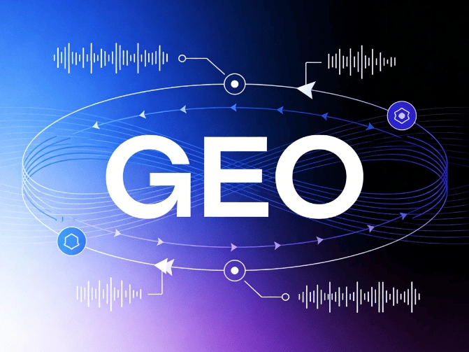
GEO · 2026-11-04The contract was signed for several months, and the monthly newspaper wrote “Access to content optimization”, “A significant increase in the exposure of AI”, but it was tested by itself, and the AI response still did not contain a brand name. What should companies see at this point? GEO is not purchasing a fixed ranking, and AI responses are influenced by such factors as platform, model, search content and question-and-answer methods. Therefore, the assessment service provider cannot look at only one screenshot or a summary report, but rather check the situation before optimization, actual implementation records, testing process and stage results.
Read full text GEO · 2026-11-03
GEO · 2026-11-03With the rapid spread of the generation AI search engine (e.g. ChatGPT, GoogleAIOverviews, Perplexity), the search habits of overseas buyers are shifting from traditional “keyword queries” to “problems to AI”. When many manufacturing firms and independent foreign trade stand-alone to introduce a professional team, one of the central questions is often asked: What do foreign trade firms usually do when they look for GEO? Different from tradition.
Read full text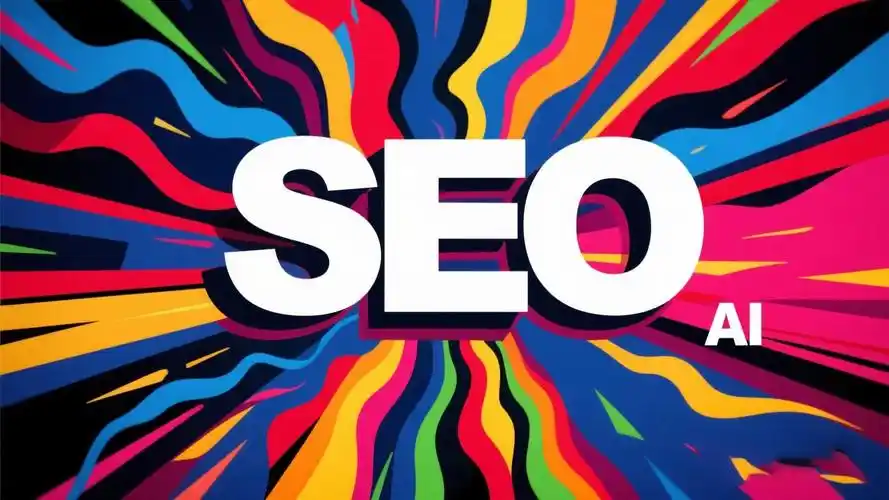
SEO · 2026-11-03In preparing for the construction of independent stations, foreign-trade enterprises often also need to consider subsequent GoogleSEO optimization. The question then arises: should foreign trade construction stations and SEOs be handed over to the same service provider, or should the construction company and SEO service providers be approached? Both models of cooperation have their own applicable scenarios. Integrated services focus more on synergies between reconstruction stations and optimization, and separate procurement allows enterprises to select professional teams based on different needs. This paper will be based on project collaboration, professional competencies, costs and responsibilities.
Read full text Ads · 2026-11-03
Ads · 2026-11-03The opening of accounts is the basis for the work to be done before advertising is launched for enterprises that are preparing to develop overseas clients through Google Ads. In practice, however, companies often encounter the problem of whether Google advertising should be opened on its own or with the assistance of a professional agent. It needs to be made clear that the assistance of the self-opening and agent in opening the account does not mean that there are two completely different advertising accounts. The enterprise can both create its own Google Ads accounts
Read full textThe way overseas users receive information is changing with the development of AI search and question-and-answer products such as ChatGPT, GoogleAIOverviews, Perplexity and others. GEO is becoming a focus of interest in the search and marketing of co-fertilizers and foreign-trade and manufacturing enterprises with a demand for overseas market expansion. The GEO is more concerned with products than traditional SEOs, which focus mainly on page visibility and natural flow in search engines.
Read full text Add • Collaborative decision-making
Add • Collaborative decision-makingHow do you choose Google ads? Comparisons from time input, account privileges, conversion tracking, material and effects re-entry, with checklists for the selection of service providers and for pre-cooperation.
Read full textHow do you check the cost of Google's investment? Distinguishing the execution costs of Google Ads advertising, commissioning fees and material tracking, and understanding the scope of the offer, access to the account and the issues to be identified before cooperation.
Read full text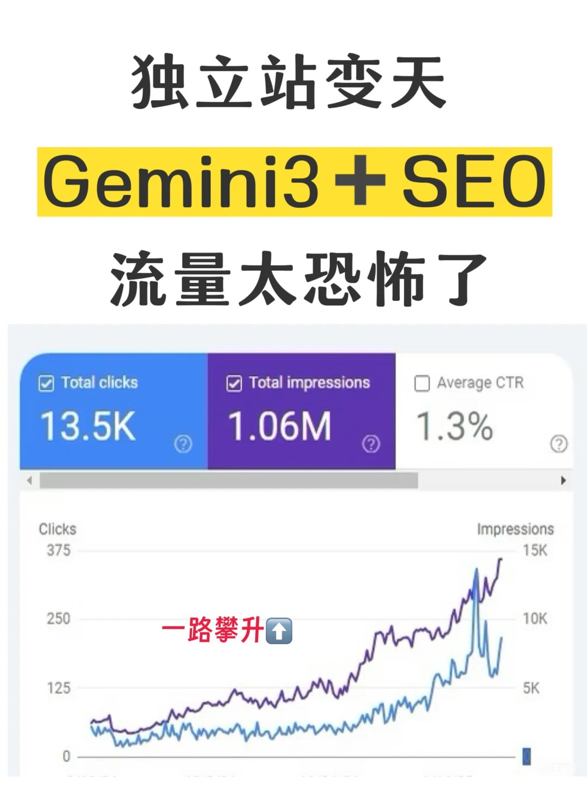
Add . Tool thinkingThe method of collating the Gemini Auxiliary Independent Station SEO covers PAA questions, answer structure, Schema inspection, text and keyword optimization, and describes the validation boundaries of AI recommendations, traffic stop-ups and Google rankings.
Read Gemini SEO workflow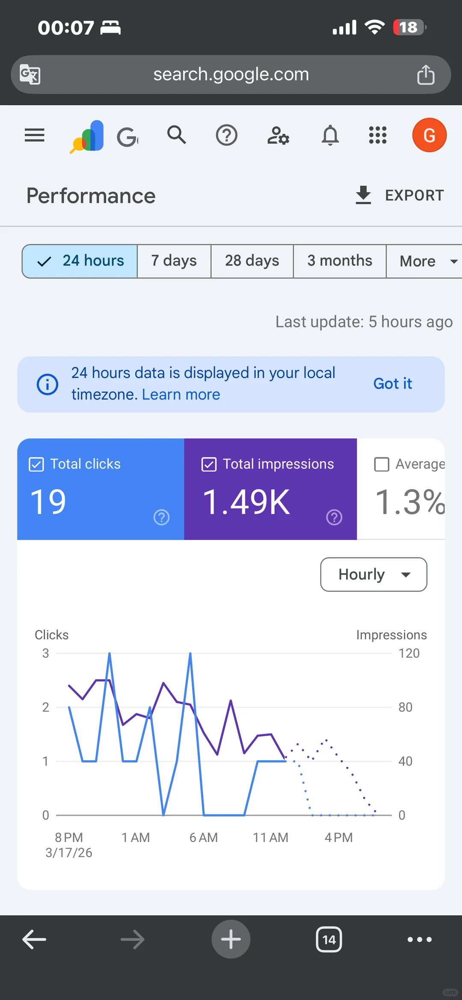
New · Process SharingAI supports the SEO blog in nine steps: from search needs studies, outline planning, fact-checking, to photo configuration and distribution tracking, helping the foreign trade website to organize content production and evaluate queries, hits and effective counselling.
Read AI Content Control Process New . SEO Introduction
New . SEO IntroductionThe project will help create a natural search base for global market sites by collating the independent Google SEO introductory process, detailing title descriptions, URLs, intake checks, keyword studies, product pages, blog inner links, photoalts and external links.
Read the SEO guide for the stand-alone station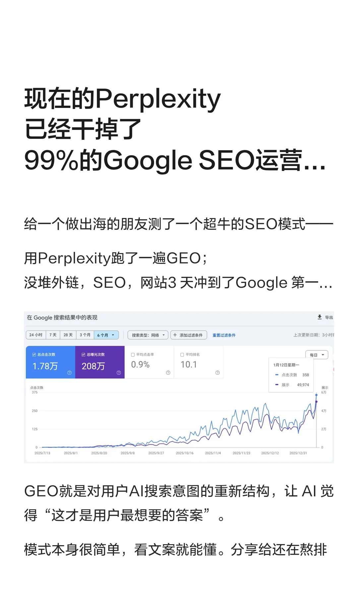
New · Views sharingPerplexity supports the GEO-based Optimization Curriculum: identifies client questions, checks answer gaps, optimizes content and inner chain, and evaluates website performance in conjunction with Search Console and the Advisory Records.
Read GEO Optimizing Workflow New Tuven Curriculum
New Tuven CurriculumFrom the preparatory work following the opening of Google to the creation of the first search for advertising, drawing keywords, bids, national languages, landing pages, title descriptions, materials and budgetary arrangements, suitable for new entry into foreign trade for B2B.
Read the starter's drop process.Share new series of test ideas for PROMS advertising expansion, decipher the audience signal mix, commercial Feeds and material testing, and budget and reproduction of the advertising series for distinction, risk and impact assessment.
Read the pax scalding.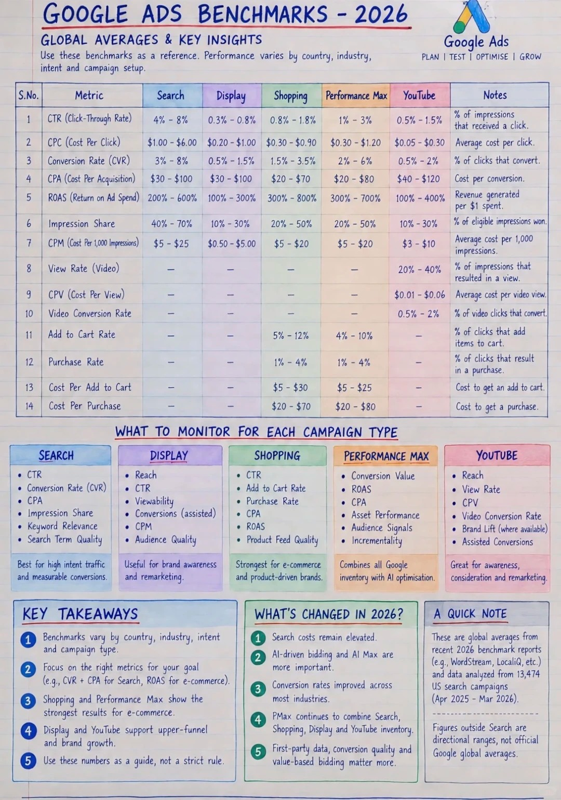
Additional · Indicator InterpretationGoogle Ads search, shopping, Prox and YouTube advertising orientation benchmark, explaining the boundaries of CTR, CVR, CPC and ROAS use, and helping Google Advertising pitchers to value their transformation by marketing goals.
Read the 2026 benchmark reading.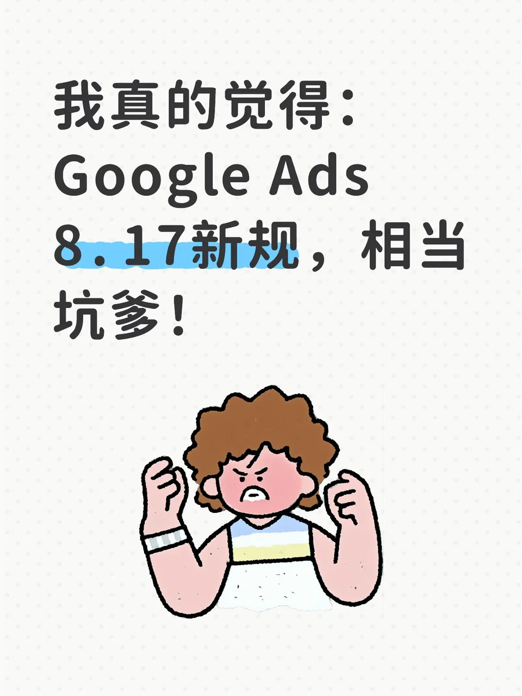
New · CommentsComment on Google Ads ' target bid update of 17 August 2026, analyse the differences between tCPA, tROAS and actual effects of the budget restricted advertising series, and collate recommendations for the review of target adjustments, budgets and conversion data.
Read the target bid comment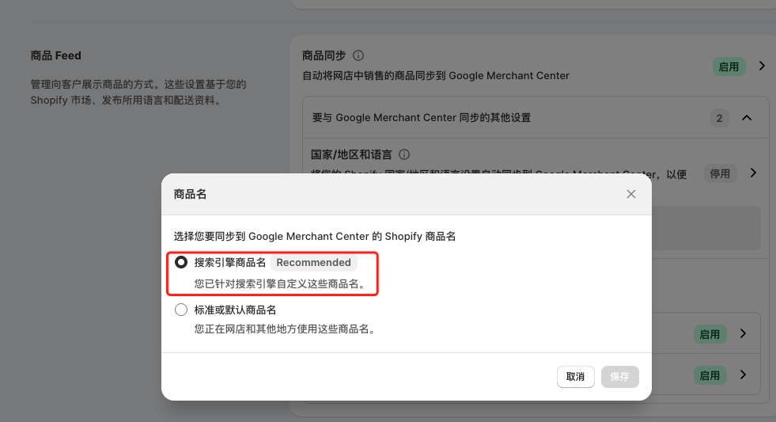
Add . Commodities Feed SOPThe Shopivy product uploads with Google Mercant Center Commodity Feed Optimizing SOP, covering keywords, product titles, SEO dollar descriptions, commodity descriptions, label maps, commodity classifications and online checks, with examples of German curtains.
Read shopify and GMC execution processes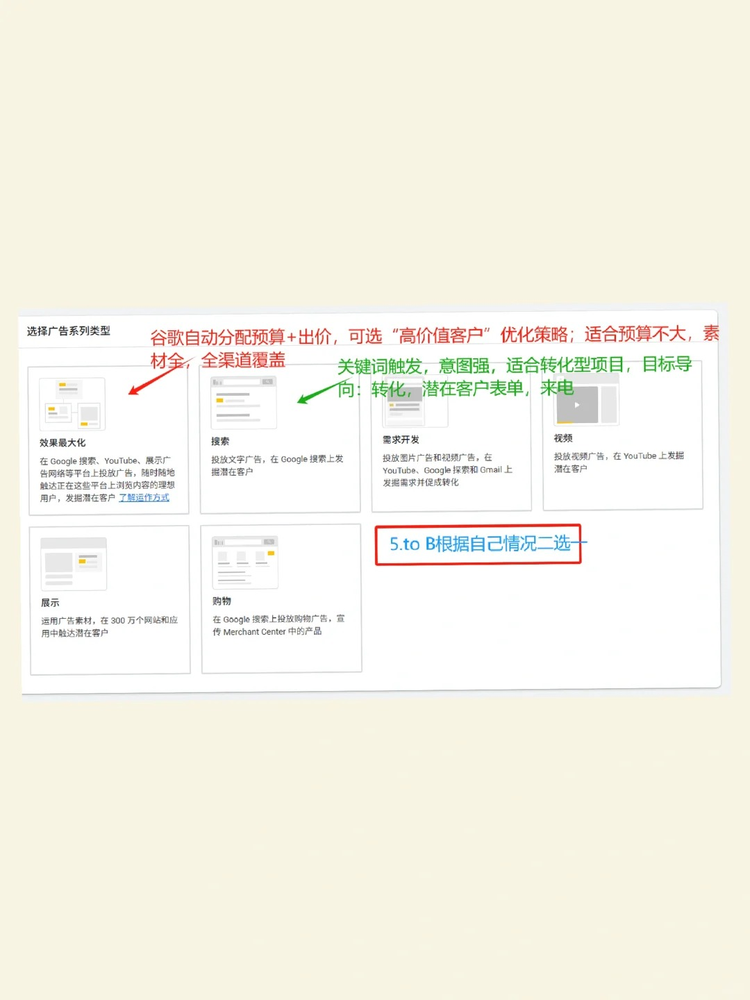
New . 13-step TutorialGoogle Ads has contributed to the global Google Advertisement test with 13 cross-graph presentations on the creation of a series of advertisements, options for conversion, bids, geography, audience, keywords, advertising, budget and GA4.
Read Google Ads' self-study program.Google Advertisement Advertising Common Questions Collection to answer 10 high-frequency questions such as assist in opening accounts, stand-alone stations, operating licences, time of clearance, authentication codes, GMC, multiple accounts, account opening failures, budget testing and operational validation.
Read Google ad opening high-frequency questions and answers.Google ranking optimization guide: Distinguishing nature search from Google ads, planning Chinese keywords by target market, checking capture, indexing, content, internal link and conversion data, and building sustainable Google SEO implementation plans.
Read Google ranking optimization guideGoogle Opens Information and Process Guide, which describes the information about the advertiser, the website, access rights, settlement and validation preparation, and answers whether Google Ads accounts already exist can be directly commissioned for placement.
Read the Google opener's guidebook.Knowledge of the applicable scenes for search, display, YouTube, shopping and impact advertising, around target markets, budgets, keywords, drop-out pages and effective transformation of the choice of Google Advertisement Policy.
Read the Google Advertisement Guide.Please describe the products or services, target countries and regions, website, budget and desired transformation. The scope of implementation will be confirmed on the basis of existing account and content conditions.